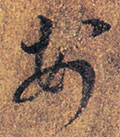
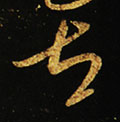
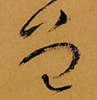
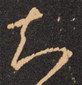
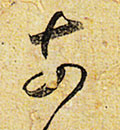
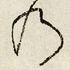
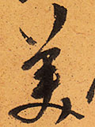
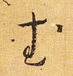
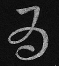

平假名想必各位都很熟悉了。平假名是日语使用的一种表音文字，最初是为了写物语与和歌而用。平假名来源于汉字的草书，那么在汉字草书书法作品中，或许就能找到日语平假名的源头吧。下面我们就来看看一些日语片假名的来源。虽说有部分平假名与汉字之间的联系过于抽象，但基本上都还是能在书法作品中找到原型的。
あ行
あ

[晋]王羲之 《上虞帖》 “安”
い

[唐]李世民 《淳化阁唐太宗帖》 “以”
う

[唐]怀素 《草书千字文》 “宇”
え

[宋]黄庭坚 《廉颇蔺相如列传》 “衣”
お

[唐]张旭 《李青莲序》 “於(于)”
か行
か
[宋]文天祥 《谢昌元座右自警辞》 “加”
き

[唐]张旭 《李青莲序》 “幾(几)”
く

[晋]王羲之 《知宝帖》 “久”
け

[晋]王羲之 《一朝帖》 “計(计)”
こ

[宋]文天祥 《谢昌元座右自警辞》 “己”
さ行
さ

[晋]王献之 《近与铁石帖》 “左”
し

[晋]王羲之 《其书帖》 “之”
す
[明]王铎 《自作诗十首》 “寸”
せ

[唐]怀素 《圣母帖》 “世”
そ

[唐]怀素 《自叙帖》 “曽(曾)”
た行
た

[唐]张旭 《李青莲序》 “太”
ち

[晋]王羲之 《中郎帖》 “知”
つ

[明]宋客 《进学解》 “川”
て

[唐]张旭 《李青莲序》 “天”
と
[唐]怀素 《四十二章经》 “止”
な行
な

[晋]谢安 《中郎帖》 “奈”
に

[晋]王献之 《玄度帖》 “仁”
ぬ

[晋]王羲之 《大佳忧卿帖》 “奴”
ね

毛泽东 “祢”
の

[唐]怀素 《四十二章经》 “乃”
は行
は

[明]文徵明 《早朝诗》 “波”
ひ
[唐]孙过庭 《景福殿赋》 “比”
ふ
[汉]张芝 《冠军帖》 “不”
へ

[唐]怀素 《自叙帖》 “部”
ほ

[晋]王羲之 《龙保帖》 “保”
ま行
ま
[晋]王羲之 《上虞帖》 “末”
み

[明]陈道复 《古诗十九首》 “美”
む

[唐]怀素 《草书千字文》 “武”
め

[晋]王羲之 《中郎女帖》 “女”
も

[明]王铎 《今夕行村外》 “毛”
や行
や

[晋]王献之 《省前书帖》 “也”
ゆ
[唐]孙过庭 《书谱》 “由”
𛀁

[唐]怀素 《秋兴八首》 “江”
よ

[元]康里巎巎 《致彦中尺牍》 “与”
ら行
ら

[唐]怀素 《大草千字文》 “良”
り
[唐]孙过庭 《书谱》 “利”
る

[唐]孙过庭 《书谱》 “留”
れ

[唐]怀素 《自叙帖》 “礼”
ろ

[元]邓文原 《书谱》 “呂(吕)”
わ行
わ

[晋]王献之 《奉别贴》 “和”
ゐ

[汉]蔡琰 《胡笳帖》 “爲(为)”
ゑ
[元]邓文原 《急就章》 “恵(惠)”
を

[唐]怀素 《自叙帖》 “遠(远)”
ん
[明]王铎 《临唐太宗帖》 “無(无)”
一些统计
结语
平假名作为日语重要的表音符号，有着深远的历史。平假名由汉字的草书演变而来，从中我们便能一窥古代中日文化交流的情况。